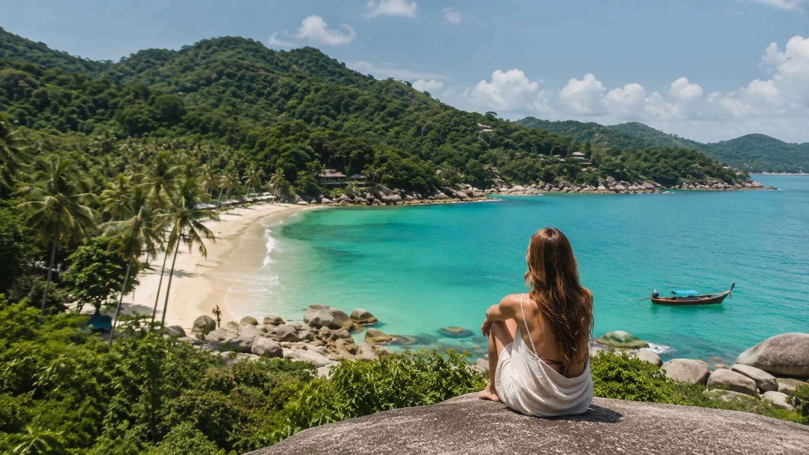
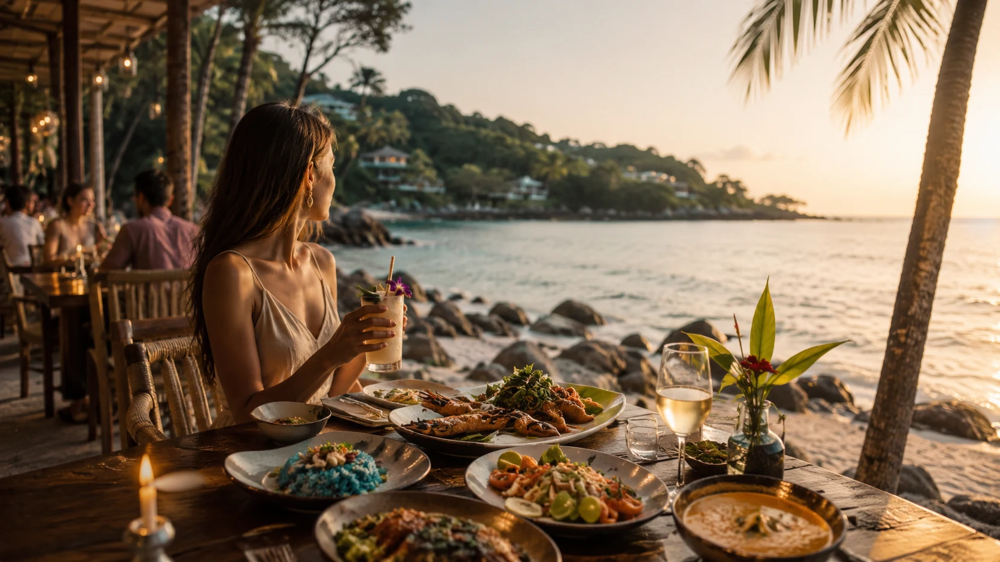
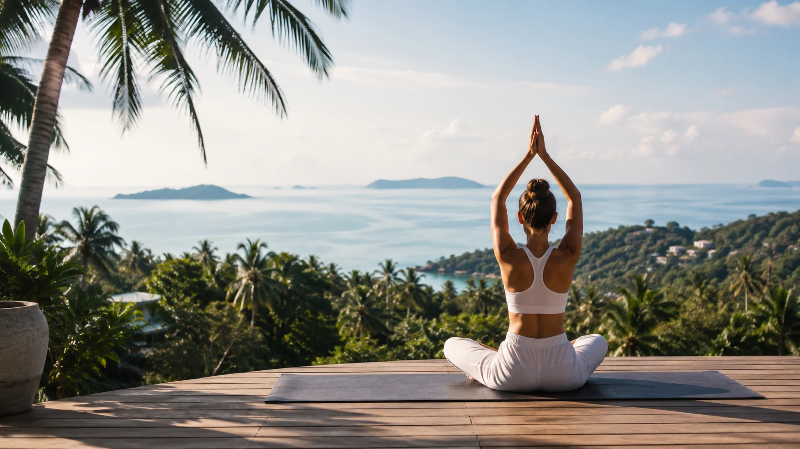
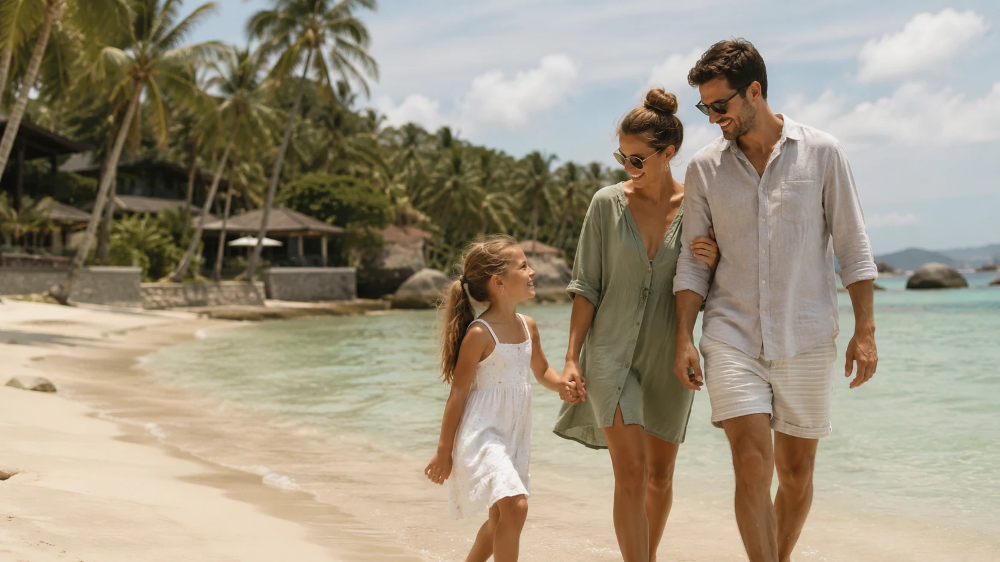
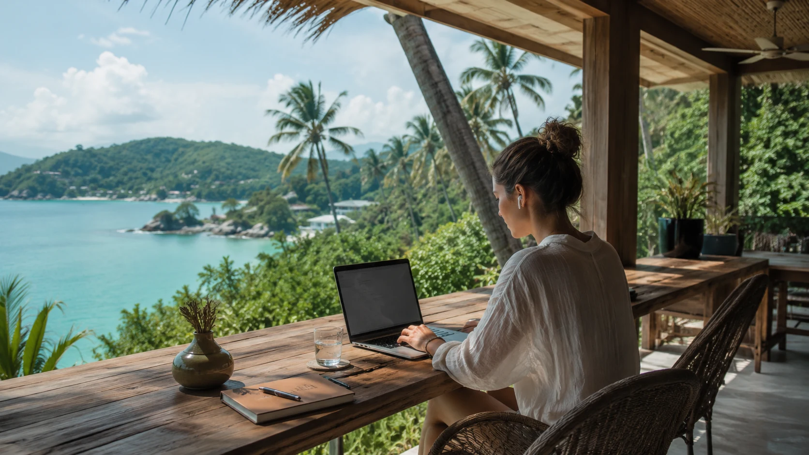

Mer et nature
Plages, sorties en bateau, plongée, cascades, jungle et points de vue permettent de profiter de l’extérieur tout au long de l’année.
Un quotidien entre mer, nature tropicale, restaurants, activités et services accessibles toute l’année.
Koh Samui permet d’alterner facilement plages, nature, sport, restaurants et vie quotidienne. L’île offre autant de lieux animés que de quartiers plus calmes, selon le rythme recherché.
Le coût de vie peut être adapté à des habitudes très différentes, du marché local aux services et établissements haut de gamme. Cette diversité fait partie de l’attrait de l’île.



Plages, sorties en bateau, plongée, cascades, jungle et points de vue permettent de profiter de l’extérieur tout au long de l’année.

Marchés locaux, cuisine thaïlandaise, cafés, restaurants internationaux et établissements haut de gamme coexistent sur l’île.

Salles de sport, yoga, boxe thaïlandaise, golf, soins et retraites bien-être composent une offre variée.

Les besoins en écoles, santé et activités familiales doivent être étudiés selon le quartier et le projet de résidence.

De nombreux quartiers disposent d’une connexion internet et d’espaces adaptés, sous réserve de vérifier chaque logement et opérateur.
L’aéroport de Koh Samui facilite les déplacements régionaux, tandis que les ferries relient l’île au continent et aux îles voisines.
Chaque secteur possède son propre rythme. Le choix dépend du niveau d’animation, de la proximité des plages, du relief et des habitudes quotidiennes.

Un équilibre entre plage, vie locale, restaurants et secteurs résidentiels plus calmes.

Un secteur vivant autour de Fisherman’s Village, avec de nombreux services et restaurants.

Une atmosphère généralement plus paisible, avec une longue plage et des zones résidentielles.

Un secteur du nord-est proche de plusieurs plages et de l’aéroport.
Les villas Latitude Samui sont actuellement proposées à Lamai, avec des orientations et environnements différents selon chaque projet.
Voir les villas disponibles